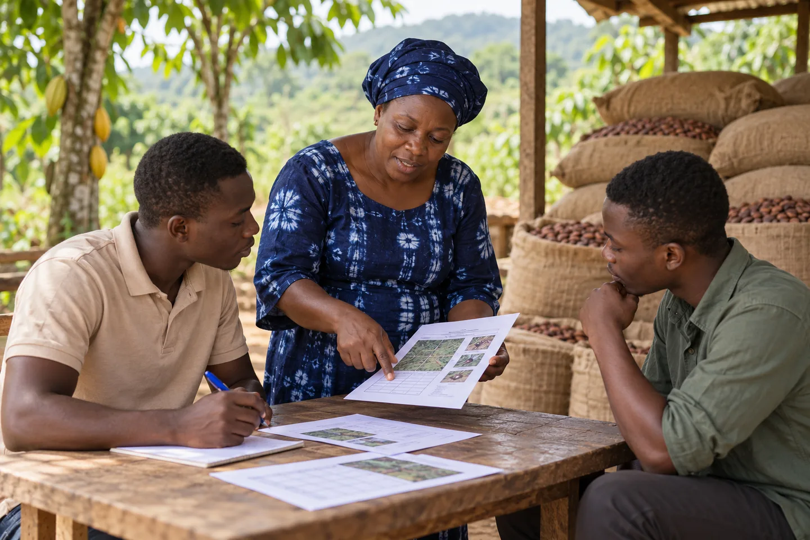

Cartographier
Comprendre vos données et vos usages.
SI agricoles & Gouvernance des données
Structurer les données et moderniser les systèmes d’information.
Construisons votre projet ↗
Un regard local. De nouvelles perspectives.
NOTRE CHAMP D’ACTION
Comprendre vos données et vos usages.
Applications, portails et plateformes.
Des protocoles de partage clairs.

Diagnostic et cartographie des données, applications et portails, migration et modernisation de plateformes, protocoles et politiques de gouvernance des données.
ET SI NOUS CULTIVIONS VOTRE PROJET ?
Présentez votre projet, votre filière et les défis que vous souhaitez relever.
Cette première version permet de préparer votre demande. Aucun message n’est envoyé : les coordonnées de contact seront ajoutées après validation.